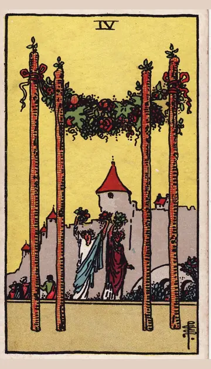

正位置ワンドの4の正位置
キーワード：安心・お祝い・落ち着く場所
恋愛
穏やかで、安心できる関係を楽しめる時です。
相手の気持ちあなたといると、安心できると感じているようです。
この先周りにも祝福される関係になりそうです。
アドバイス二人の時間を、ゆっくり楽しみましょう。
気をつけること居心地の良さに甘えて、気遣いを忘れないように。
この先周りにも祝福される関係になりそうです。
アドバイス二人の時間を、ゆっくり楽しみましょう。
気をつけること居心地の良さに甘えて、気遣いを忘れないように。
人間関係
仲間と楽しい時間を過ごせる時です。
相手の気持ちあなたとの時間を、楽しいと感じているようです。
この先楽しい集まりや、うれしい誘いがありそうです。
アドバイス仲間と集まる機会をつくってみましょう。
気をつけること仲の良い人だけで固まりすぎないように。
この先楽しい集まりや、うれしい誘いがありそうです。
アドバイス仲間と集まる機会をつくってみましょう。
気をつけること仲の良い人だけで固まりすぎないように。
仕事・学業
一つの成果を、喜び合える時期です。
この先成果が認められ、祝う機会がありそうです。
アドバイス小さな成功も、みんなで喜び合いましょう。
気をつけること一区切りで満足して、次の準備を忘れないように。
アドバイス小さな成功も、みんなで喜び合いましょう。
気をつけること一区切りで満足して、次の準備を忘れないように。
お金
お金の面で、ひと区切りつける時です。
この先安心できるお金の状態が続きそうです。
アドバイス頑張った自分に、ささやかなご褒美を。
気をつけることお祝いで、使いすぎないように。
アドバイス頑張った自分に、ささやかなご褒美を。
気をつけることお祝いで、使いすぎないように。
生活
家で、ほっとくつろげる時です。
この先心温まる時間を過ごせそうです。
アドバイス家族や友人を招いて、楽しく過ごしましょう。
気をつけること楽しみすぎて、羽目を外しすぎないように。
アドバイス家族や友人を招いて、楽しく過ごしましょう。
気をつけること楽しみすぎて、羽目を外しすぎないように。
今日の運勢
くつろいだ気分で過ごせる日です。
この先心温まる時間を過ごせそうです。
アドバイス自分へのご褒美を用意しましょう。
気をつけること楽しみすぎて、羽目を外しすぎないように。
アドバイス自分へのご褒美を用意しましょう。
気をつけること楽しみすぎて、羽目を外しすぎないように。
逆位置ワンドの4の逆位置
キーワード：小さな不満・気のゆるみ・形だけの安定
恋愛
安定しているようで、小さな不満がたまりやすい時です。
相手の気持ちあなたとの関係に、少し物足りなさを感じているようです。
この先本音を話せれば、より安心できる関係になりそうです。
アドバイス小さな不満は、ため込まずに伝えましょう。
気をつけること表面だけ仲良くして、本音を隠しすぎないように。
この先本音を話せれば、より安心できる関係になりそうです。
アドバイス小さな不満は、ため込まずに伝えましょう。
気をつけること表面だけ仲良くして、本音を隠しすぎないように。
人間関係
集まりの中で、居心地の悪さを感じやすい時です。
相手の気持ちあなたとの間に、言えずにいることがあるようです。
この先自分に合う居場所が見つかりそうです。
アドバイス無理に輪に入ろうとせず、自分のペースで。
気をつけること内輪の話題で、誰かを置いていかないように。
この先自分に合う居場所が見つかりそうです。
アドバイス無理に輪に入ろうとせず、自分のペースで。
気をつけること内輪の話題で、誰かを置いていかないように。
仕事・学業
成果が出ても、気が抜けやすい時期です。
この先気持ちを立て直せば、また順調に進みそうです。
アドバイス気持ちを切り替えて、次の目標を立てましょう。
気をつけること気のゆるみからのミスに気をつけて。
アドバイス気持ちを切り替えて、次の目標を立てましょう。
気をつけること気のゆるみからのミスに気をつけて。
お金
交際費がかさみやすい時です。
この先見直せば、落ち着きそうです。
アドバイス付き合いの出費を、少し見直しましょう。
気をつけること断れずに、出費を重ねないように。
アドバイス付き合いの出費を、少し見直しましょう。
気をつけること断れずに、出費を重ねないように。
生活
家の中が、落ち着かないと感じやすい時です。
この先落ち着ける暮らしを取り戻せそうです。
アドバイス部屋を片づけて、くつろげる場所をつくりましょう。
気をつけること家のことを、一人で抱えないように。
アドバイス部屋を片づけて、くつろげる場所をつくりましょう。
気をつけること家のことを、一人で抱えないように。
今日の運勢
予定が崩れたりして、落ち着かない日です。
この先夜にはほっと一息つけそうです。
アドバイス部屋を整えると、気持ちが落ち着きそうです。
気をつけること予定変更に振り回されないように。
アドバイス部屋を整えると、気持ちが落ち着きそうです。
気をつけること予定変更に振り回されないように。
このページの文章は、アプリ「ひとやすみタロット」の結果に使っている文章です。アプリでは、あなたの相談や、カードが出た位置（今の状況・これからの流れ・アドバイス）に合わせて、この中から文章を選びます。逆位置の読み方は逆位置のことをご覧ください。
「ワンドの4」が出たら、あなたの相談ではどう読む？
アプリでは、質問への答えに合わせて、カードの言葉をあなたの相談に合わせて届けます。
Android 対応・会員登録なし